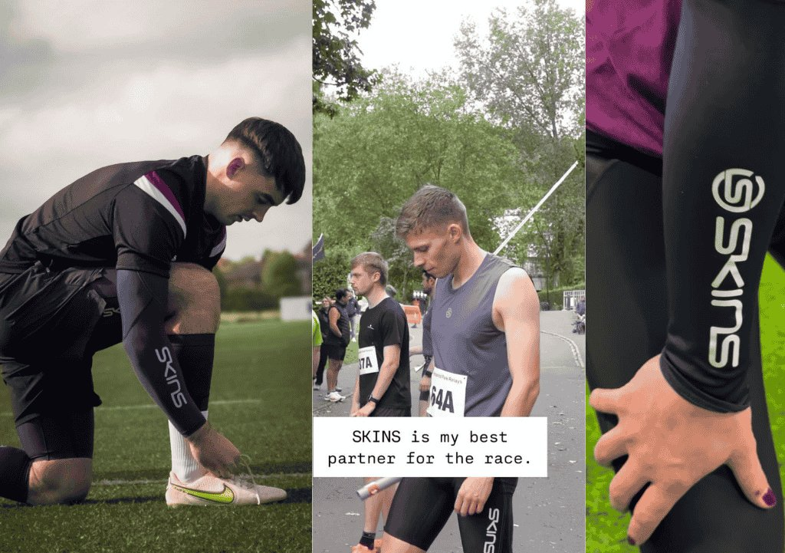

How SKINS Activated Athletes Across 3 Countries and Reached Over 200,000 Views
Founded in 1996, SKINS Compression is a global pioneer in compression sportswear, trusted by elite and everyday athletes to enhance performance, support recovery, and reduce injury risk.

Overview
The campaign
Founded in 1996, SKINS Compression is a global pioneer in compression sportswear, trusted by elite and everyday athletes to enhance performance, support recovery, and reduce injury risk. To strengthen brand visibility and showcase the real-world performance of its compression apparel, SKINS partnered with Sport Endorse to activate a multi-market athlete UGC campaign focused on authentic sporting experiences rather than traditional advertising.
What stood out most was how easily SKINS found talented athletes from different countries, cities, and sports, all through the Sport Endorse platform. Through an opportunity, they connected with Cameron Ring (Rugby, Ireland), David Harte (Hockey, Ireland), Sergio Díaz, Marta Bayo Augustin, and Ben Claridge (Athletics, Spain & UK), Conor McCormack (Football, Ireland), Noel López (Football 7-a-side, Spain), Nicola McPeak (Weightlifting, Ireland), Tobias Christensen (Basketball, UK), Laura Delany (Cricket, Ireland), and Guy Stapleford (Cycling, UK). Each athlete brought their own audience, sport, and personal story, which helped show how SKINS performs across very different environments, from match days and endurance training to gym sessions. Being able to discover and manage athletes from multiple markets so quickly, all in one place, made it easy for SKINS to run a truly international campaign and reach new audiences in an authentic way.
Each athlete independently created their own UGC-style collaborative Reels, action photos, and Stories, sharing their personal experience wearing SKINS. Because the content was self-shot and experience-led, it felt genuine and relatable, helping build stronger trust and credibility with their audiences while reinforcing SKINS’ performance-driven identity.
The campaign generated over 200,000+ combined views, delivering significant brand visibility and creating a valuable library of authentic athlete-generated content. By leveraging trusted athletes and real performance-led storytelling, SKINS successfully strengthened its credibility, reinforced its position as a leader in compression sportswear, and connected with new audiences across key European markets.
Run a campaign like this
Tell us your goal — we'll show you the athletes, the process and the reporting on a short demo.
Book a Demo